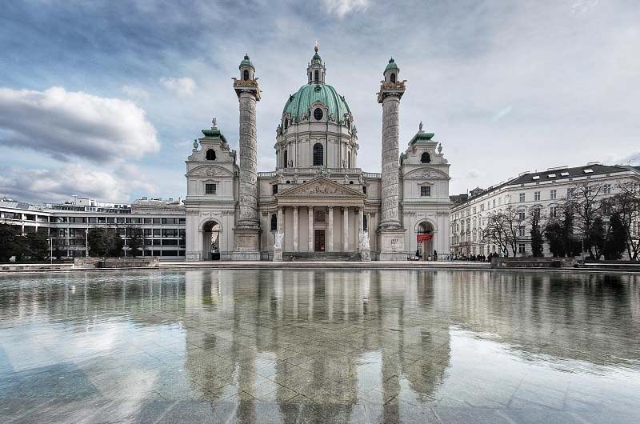

Pocas ciudades se deslizan tan fácilmente entre el presente y el pasado como Viena. Su espléndida faceta histórica se reconoce enseguida: majestuosos palacios imperiales, interiores barrocos fastuosos, museos al lado de plazas magníficas...
Pero Viena es también uno de los espacios urbanos más dinámicos de Europa. Cerca del Hofburg, el MuseumsQuartier alberga obras de arte contemporáneo que se cuentan entre las más provocativas del mundo, detrás de una llamativa fachada de basalto. En el exterior, un patio bulle las noches de verano con multitud de vieneses que beben y charlan.
La ciudad de Mozart es también la Viena de Falco (Hans Hölzel), quien inmortalizó sus texturas urbanas en forma de canción. Hay restaurantes de sushi y de fusión austro-asiática junto al tradicional Beisl (restaurante pequeño). En esta Viena se puede mencionar un slam de poesía y la Stephansdom en la misma frase.
Si a ello añadimos los espacios verdes (casi la mitad de la superficie urbana está ocupada por parques) y el Danubio “azul” discurriendo al este del centro histórico, el resultado es una capital característicamente austriaca.
Te presento algunas fotografías de esta preciosa ciudad, con una breve descripción de los lugares que representan:
El Schloss Belvedere es un palacio de estilo barroco situado en la calle Prinz-Eugen-Strasse 27 de Viena.
El conjunto artístico consta de los dos palacios Belvedere (alto y bajo), convertidos en museo, y de otro llamado Schwarzenberg, transformado en hotel. Los dos palacios principales están unidos por unos jardines que se encuentran divididos en tres niveles que representan diversas alegorías.
Los museos que aquí se encuentran son:
En el Belvedere se puede apreciar una impresionante colección de pinturas imperiales. En el piso superior acoge la galería austríaca de los siglos XIX y XX que, entre otras, muestra la conocida obra de Gustav Klimt, El Beso.
La Karlskirche (Iglesia de San Carlos Borromeo) es una iglesia barroca de Viena, situada en Kreuzherrengasse, 1, en la parte sur de Karlsplatz, al borde del primer distrito, y doscientos metros por fuera de la Ringstrasse.
Durante la fuerte epidemia de peste que azotó Viena en 1713 y que se cobró la vida de unas 8.000 personas, el emperador Carlos V prometió que, tan pronto como la ciudad se viera libre de esta calamidad, levantaría un templo dedicado a San Carlos Borromeo, arzobispo de Milán y héroe de la epidemia de peste de 1576. Al año siguiente de la epidemia se anunció un concurso para el proyecto de la iglesia que fue adjudicado a Johann Bernhard Fischer von Erlach. Los fondos que permitieron sufragar la construcción de la iglesia fueron aportados forzosamente por los judíos de Viena. La iglesia es un símbolo de poder religioso y político de la dinastía imperial de los Habsburgo.
Las obras se iniciaron en 1716, y tras la muerte del arquitecto en 1723, las obras fueron continuadas, hasta su terminación en 1737, por su hijo Joseph Emanuel Fischer von Erlach.
El Parlamento de Viena se construyó como parte del proyecto de renovación de la Ringstrasse. El enorme edificio de estilo neoclásico comenzó su construcción en 1874 y se vio terminado diez años después.
El Parlamento de Austria fue diseñado con un estilo denominado Historicismo, con la intención de que su construcción recordara a la antigua Grecia como cuna de la democracia.
El edificio cuenta con dos grandes salas de sesiones unidas por un gran pórtico central; una de ellas es la sede del Consejo Nacional y la otra es ocupada por el Consejo Federal.
El Ayuntamiento de Viena (Wiener Rathaus), de estilo gótico, fue diseñado por Friedrich von Schmidt y construido entre 1872 y 1883. En lo alto de la torre se encuentra el Rathausmann, una escultura dorada de 3,5 metros de altura que representa la figura de un portaestandarte y que se ha convertido en un símbolo de Viena (la ciudad entrega anualmente un premio cuya estatuilla tiene la forma del Rathausmann). Frente al edificio hay un parque llamado Rathauspark.
La Noria de Viena, también conocida como Wiener Riesenrad (noria de Viena en alemán), o simplemente Riesenrad, es una noria ubicada a la entrada del parque de atracciones del Prater, ubicado en el parque homónimo, en el segundo distrito de Viena, Leopoldstadt.
Fue una de las primeras norias, construida en 1897 para celebrar el cincuenta aniversario del reinado de Francisco José de Austria. El diseño corrió a cargo del inglés Walter Bassett, lo que explica que su altura de 61 metros, sean 200 pies redondos.
La Riesenrad es, hoy en día, uno de los principales atractivos turísticos de Viena. Era considerada la noria más alta existente en el mundo, de los años 20 hasta 1985, en que la noria Technocosmos (ahora demolida) fuera construida en Tsukuba, Japón.
Originalmente, la noria contaba con 30 góndolas, pero debido a los daños ocasionados durante la Segunda Guerra Mundial, durante la reconstrucción, sólo se recolocaron 15 de estas cabinas.
La Ringstraße (en español, calle anular), conocida también como Ring de Viena, es una avenida de circunvalación que rodea el centro de Viena. Esta avenida tiene a ambos lados obras arquitectónicas muy significativas, por lo que es considerada uno de los grandes atractivos de la capital austriaca.
El Ringstraßenstil (estilo de la Ringstraße) marcó la arquitectura de tipo historicista de los años 1860 a 1900.
El Palacio de Schönbrunn, también conocido como el Versalles vienés, es uno de los principales edificios históricos y culturales de Austria, desde el siglo XIX ha sido una de las principales atracciones turísticas de la ciudad de Viena y ha aparecido en postales, documentales y diversos filmes cinematográficos.
El palacio, junto con sus jardines, fue nombrado Patrimonio de la Humanidad de la Unesco en 1996.
La Ópera Estatal de Viena (en alemán: Wiener Staatsoper), ubicada en Viena, es una de las más importantes compañías de ópera mundiales. Hasta 1920, se llamó Ópera de la Corte de Viena (k.k. Hofoper). Es el centro neurálgico de la vida musical vienesa y uno de los polos de atracción del mundo musical.
Es imposible listar la enorme cantidad de monumentos y lugares de interés que visitar en esta ciudad. De algunos hemos visto ya fotos arriba, pero por hacer una pequeña recopilación, y mostrarte enlaces para conseguir más información, puedes empezar por:
Al pensar en la comida austriaca, es muy común imaginar salchichas y tarta de chocolate. Aunque este hecho no está alejado de la realidad, la cocina vienesa es mucho más rica y variada gracias a las influencias de algunos países vecinos, como Hungría, Alemania, República Checa y también de Italia.
La cocina de Austria es conocida en todo el mundo sobre todo por sus bollos y dulces, como es el caso de los strudel, trozos de tarta que suelen acompañarse con una buena taza de café vienés.
Al ver la carta de algunos restaurantes puede que sea complicado decidir; en esos casos, puede que os venga bien llevar a mano este listado con algunos platos típicos vieneses:
Los mejores restaurantes de Viena son:
En Viena hay multitud de hoteles y alojamientos para todos los gustos y presupuestos. En portales especializados como Tripadvisor o HRS puedes encontrar información y opiniones de los usuarios sobre la gran mayoría de los establecimientos disponibles.
Algunos de los mejores hoteles de Viena son:
Espero que si no lo has hecho, puedas encontrar un hueco para visitar, aunque sean pocos días, esta maravillosa ciudad. Te enamorarás de ella, como hice yo.